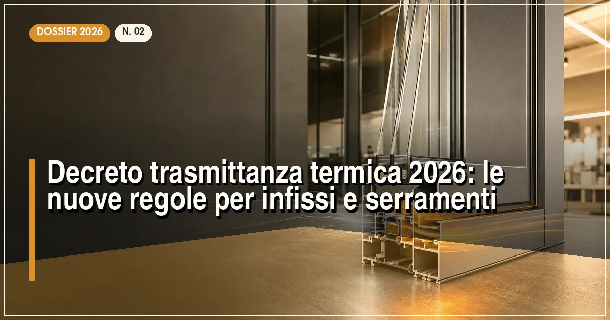
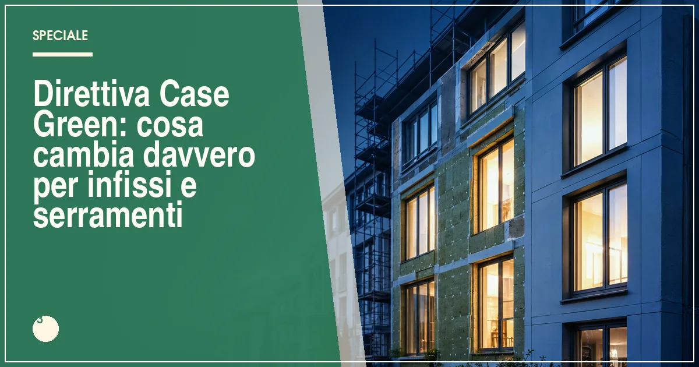
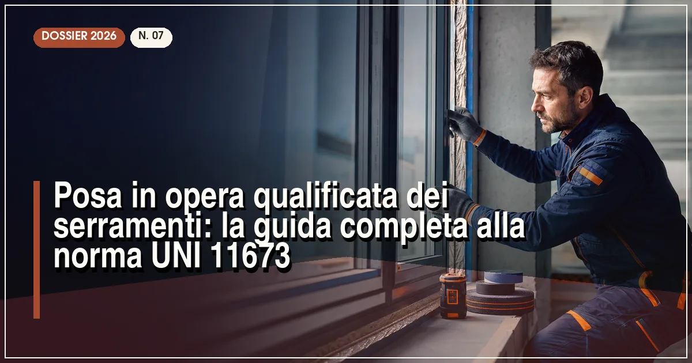

Bonus serramenti 2026: detrazione del 50%, requisiti e guida completa
Massimali, trasmittanze limite, bonifico parlante e pratica ENEA: tutto per non perdere la detrazione.
Detrazioni fiscali, decreti, direttive europee e norme tecniche: la redazione traduce la burocrazia in guide operative, con requisiti, scadenze e errori da evitare.
Massimali, trasmittanze limite, bonifico parlante e pratica ENEA: tutto per non perdere la detrazione.

Cosa cambia per i valori limite di trasmittanza e per l'accesso alle detrazioni fiscali.

La direttiva europea sull'efficienza energetica degli edifici spiegata in parole semplici.

Perché il giunto tra telaio e muratura vale più del serramento stesso.